Time to take a break from puzzles! Go for a run, escape to another game, and make the most of what you have left!
Concentrated artillery bombardment in an area (7)
Our planet's name (5)
Medieval area of study concerned with the transmutation of matter (7)
Baked dish where meats and vegetables are placed in a pastry shell (3)
Inspect a thing closely to determine its nature (7)
Not nearby; far away and often inaccessible (6)
Electrical phenomenon characterized by natural light displays in the sky (6)
Process of increasing in size (6)
American thrash metal band formed in 1981 (6)
Item worn on the face as a disguise or a costume (4)
Red or pink gemstone consisting of corundum (4)
Solid whose molecules form a lattice structure (7)
Of great vertical extent; tall (4)
Fast-flowing and turbulent part of a river (5)
A short form for "statistic" (4)
Nurse, remedy or heal a disease (4)
Suburban or urban area bounded by four streets (5)
Watch with a hinged cover protecting the glass (6)
Earn a living by growing crops or keeping livestock (4)
Raise a liquid above its boiling temperature without vaporization (9)
Set, collection, or gathering of people or things (5)
An individual thing or unit, especially on a list (4)
Noriko Ashida's alias in the Marvel Universe (5)
Dark area produced by an object and a source of light (6)
Cook food in an oven (4)
An interference, disturbance, or problem which interrupts an event, activity, or process (10)
Small and pointed missile that can be thrown or fired (4)
Type of volcano with gently sloping sides and runny lava (6)
Set of articles or equipment needed for a purpose, e.g. first-aid (3)
Person employed to secretly obtain information on an enemy or competitor (3)
Especially in science fiction, to move across time and space instantly (8)
Locate water, e.g. using a stick (6)
Large, ugly, or otherwise frightening creature (7)
Squall; tempest (5)
| 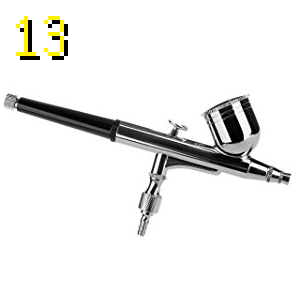 | 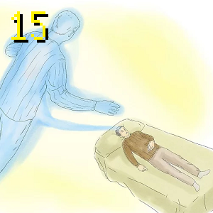 |
| 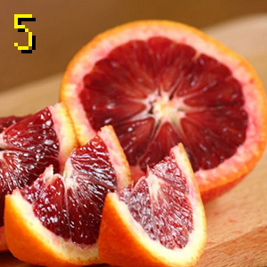 | 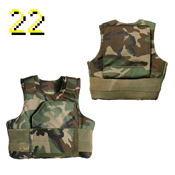 |
| 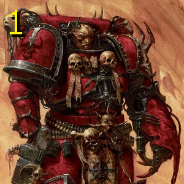 | 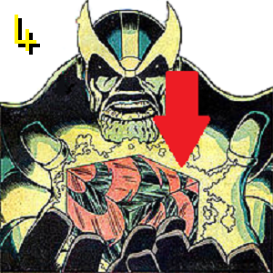 |
| 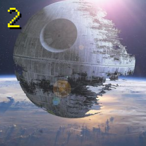 | |
| 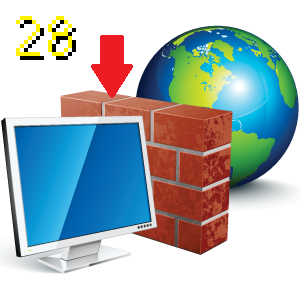 | 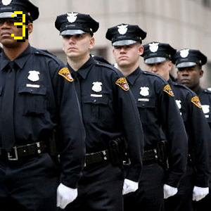 |
| 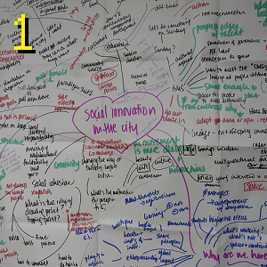 | 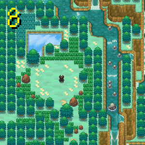 |
| 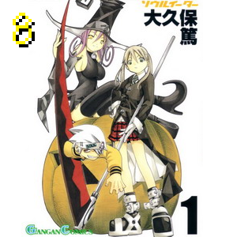 |